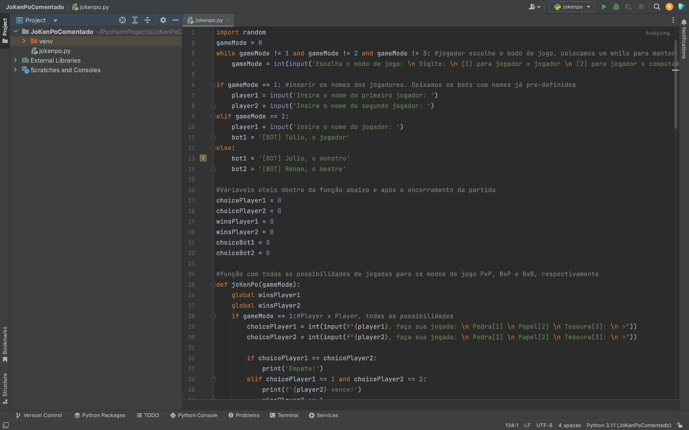
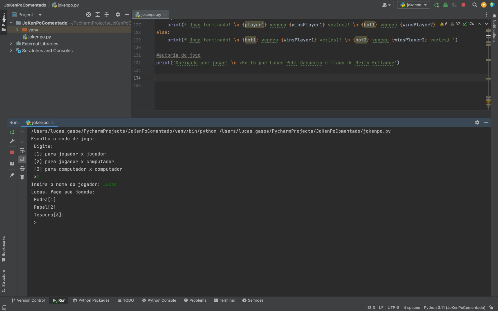
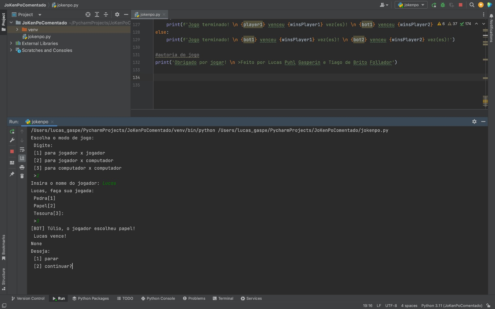

O projeto foi feito na linguagem Pyhton e apresenta ao usuário um jogo interativo de jo-ken-po - ou
pedra, papel, tesoura - que pode ser disputado entre 1, 2 ou nenhuma pessoas.

Ao iniciar o jogo, o programa exibe um menu com diferentes opções. O jogador pode escolher jogar
sozinho, o que
significa enfrentar a inteligência artificial do computador. Nessa modalidade, o bot escolhe sua jogada de
forma
aleatória, garantindo que cada partida seja única e imprevisível.
Além disso, existe a opção de jogar com outra pessoa, tornando o jogo interativo e permitindo disputas
emocionantes
entre amigos ou familiares. Cada jogador tem a oportunidade de fazer sua escolha de jogada, e o programa
verifica quem
saiu vencedor de acordo com as regras tradicionais do jogo.


Após cada rodada, o programa exibe o resultado da partida, indicando o vencedor ou se houve um empate.
Além disso, ele pergunta ao jogador se deseja continuar jogando. Essa opção oferece a oportunidade de
prolongar a diversão e continuar as partidas.